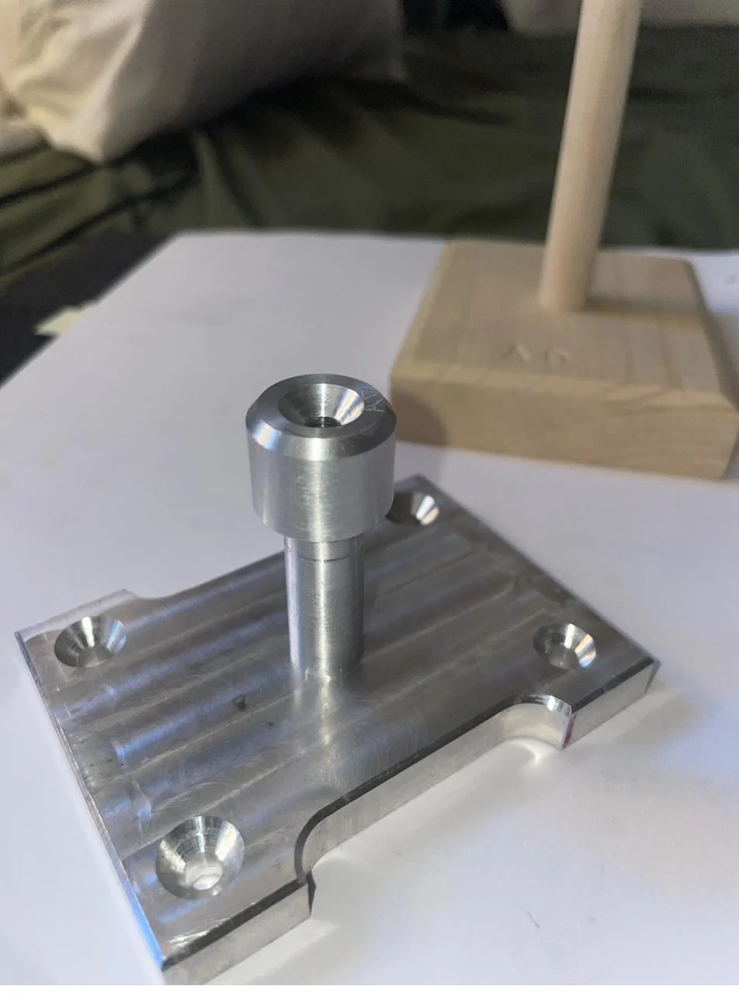

CAD Modeling · Precision Machining · SJSU
Hanger — CAD to Part
I modeled a screw-mounted hanger in SolidWorks and machined it from 6061 aluminum on a manual mill and lathe. I checked dimensions during machining against the model, working to a 0.001-inch tolerance.

Key Specs
| Role | Solo |
| Materials | 6061 aluminum |
| Process | SolidWorks → manual mill and lathe, SJSU machine shop |
| Tolerance | Held to 0.001 in |
| Verification | Dimensions checked against the model during machining; finished part matched |
| Deliverables | Part model, finished aluminum part |
What I made
The hanger has a base plate with mounting holes and a central post. I designed the part and machined it myself at the San José State machine shop. The finished aluminum part and SolidWorks model were the project deliverables.
Machining challenge
The 0.001-inch tolerance made the operation sequence and dimensional checks important. I needed to plan how to produce the modeled features on a manual mill and lathe, checking each stage before removing more material.
Process and inspection
I defined the dimensions in SolidWorks, machined the features on the mill and lathe, and checked the part against the model as I worked. The finished part matched the intended geometry within the recorded machining tolerance.

What I learned
Making my own design helped me connect a dimension on a drawing with the work needed to produce it. The project gave me practice planning operations, checking dimensions between cuts, and treating inspection as part of machining.